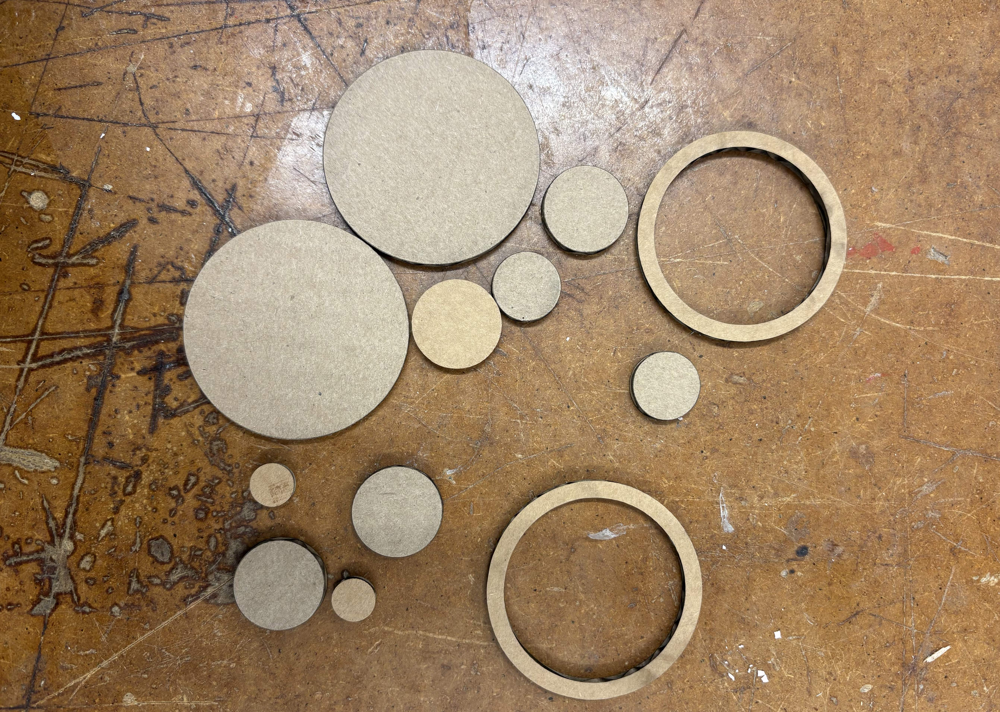
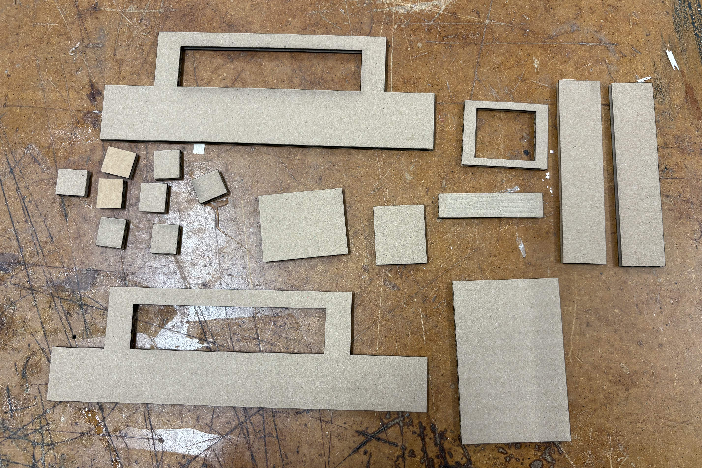
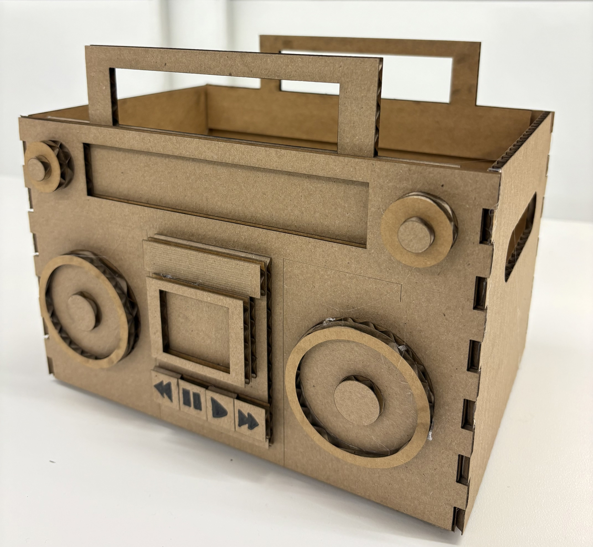
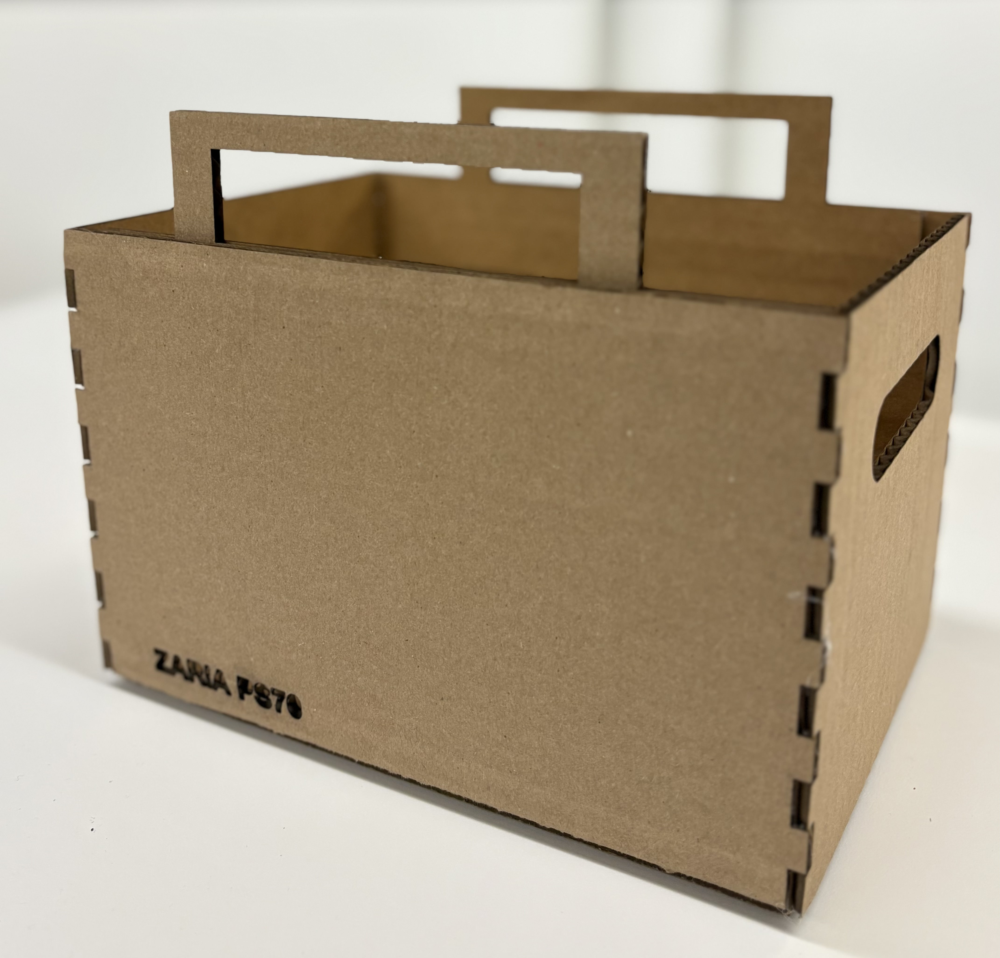
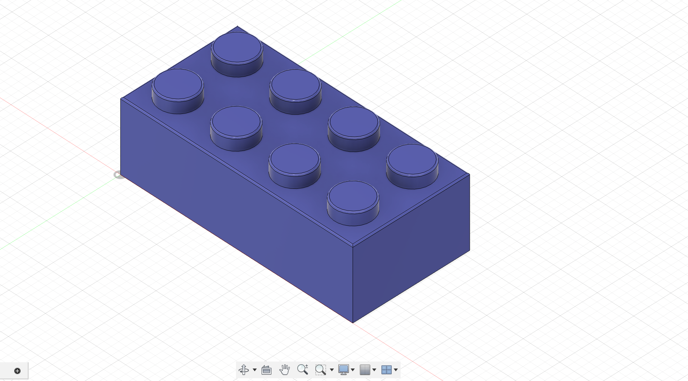
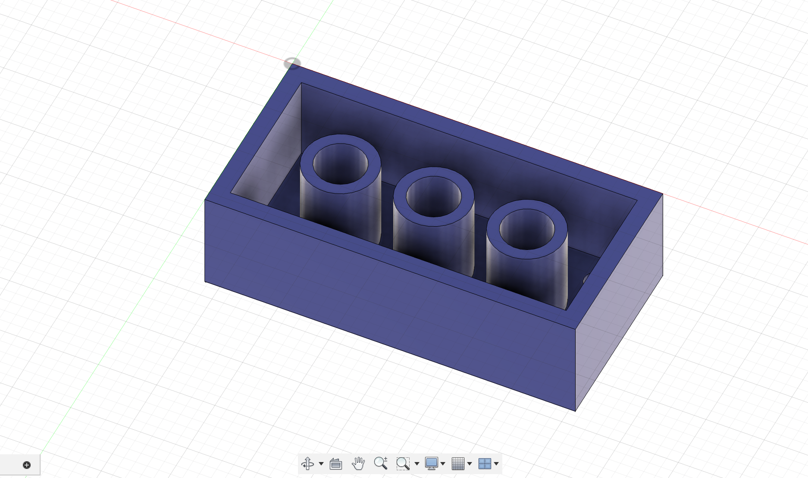
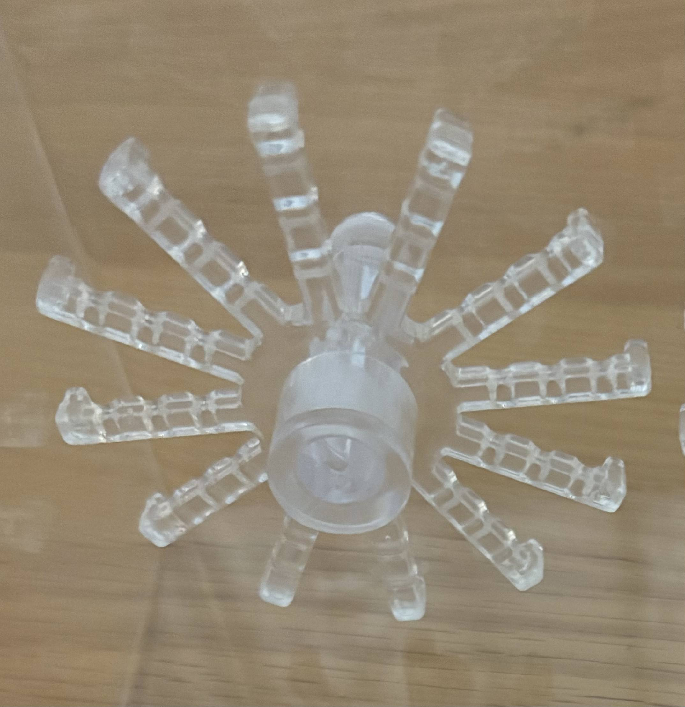

<div class="textcontainer">
<p class="margin"> </p>
<h3>Week 2: 2D Design & Cutting</h3>
<!-- <p class="margin"> </p>
<div class="flexrow">
<a id="btn" href="./temp.zip" download>Test Download Button
</a>
</div>
<p class="margin"> </p> -->
<p><strong> <h4>Assignment 1: MAKE A BOX</h4> </p>
<p> For this assignment, we are creating a fun storage box to keep our stuff for the semester. </p>
<p> To start I first followed a tutorial to create a finger joint box. The parameters for this box were determined by using calipers to estimate the desirable dimensions for the box while also accounting for the thickness of the cardboard (~4 mm) and the kerf of the laser cutter. </p>
<p> The design for my box is a boombox and after getting inspiration form multiple images online, I created smaller pieces of squares and circles in Fusion360 that will be assembled on the face of my box. </p>
<div style = "display: flex;">


</div>
<p> Now with all the parts cut out, I began to assemble everything together with a hot glue gun. Lastly, I used a marker to write the pause, play and fast forward signs on my buttons. </p>
<p> Here is my final boombox! </p>


<p><strong> <h4>Assignment 2: FUSION 360 TUTORIAL</h4> </p>
<p> Below are two Fusion360 tutorials I completed to get more practice with parametric 2D modelling and assembly. </p>
<p><u> Tutorial 1:</p></u> https://youtu.be/7lKpzGtoQX0?si=s9YeJydoKJGrt9ud </p>
<div style = "display: flex;">
<img src="./img1tut1.jpg" alt="tutorial 1 img" style="width:500px">
</div>
<p><u> Tutorial 2:</p></u> https://youtu.be/d3qGQ2utl2A?si=Bg3QRaFgAKNFPIe7 </p>
<div style = "display: flex;">


</div>
<p><strong> <h4>Assignment 3: FUSION MODELING</h4> </p>
<p> For this assignment, I identified two items in the lab that could be useful for my final project to practice with Fusion modeling. </p>
<p> To ensure that my fusion models were to scale, I measured the dimensions of my object using the calipers. I then modeled these objects in Fusion 360. </p>
<p> Here are the Fusion models: </p>
<p><u> Object 1:</p></u> I modeled the hooks from my jewelry as a part that will be used in my final project <p>
<div style = "display: flex;">

<img src="./Fusion hook.png" alt="fusion360 model of hook" style="width:500px">
</div>
</div>